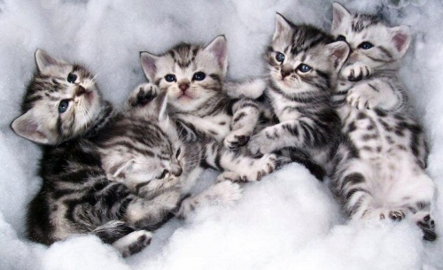
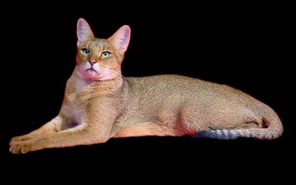
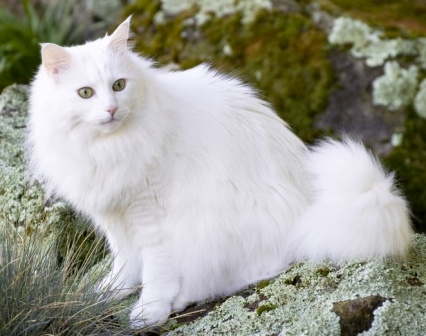
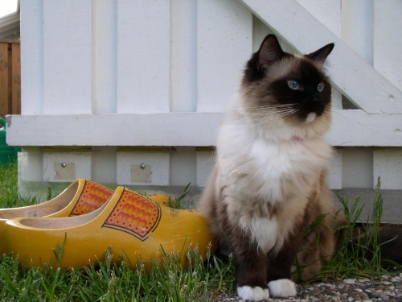
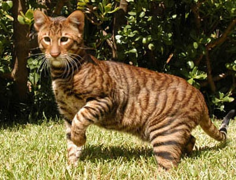
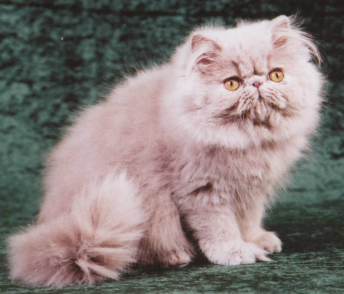
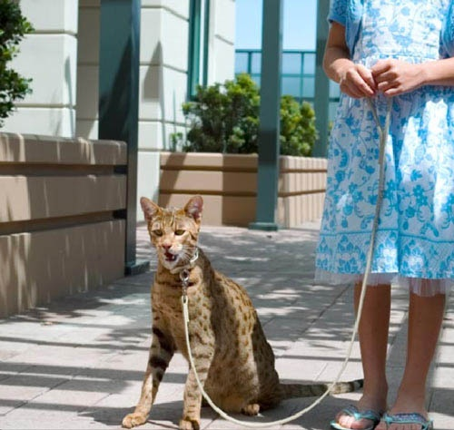
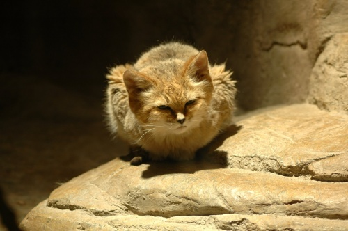
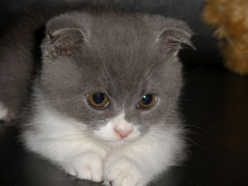

Manx

A manx cica Angliából, Man kikötővárosból származik, és legjellegzetesebb tulajdonsága, hogy vagy nincs farka, vagy csonkolva van. Bár a génállományuknak köszönhetően az is előfordul, hogy teljes hosszúságú farokkal születik a kiscica. Őket azonban nem szívesen látják a versenyeken - talán mert azt gondolják, hogy az egyszerű házicicát próbálják egy farokhossznyi előnyhöz juttatni gazdáik.
A manx zömök, kerekded cicus, aki szeret magasra ugrani, szorosan kötődik a gazdájához, és olyan tulajdonságai is vannak, mint a kutyáknak - például elássa a játékait.
Amerikai rövidszőrű cica
Az amerikai rövidszőrű macska népszerű cica az Egyesült Államokban. Eredetileg hajókon tartották, hogy elfogja az egereket - erre még ma is képes, ha ráneveljük.
Atléta alkatú macska, feje kissé nagy és szögletes, mégis kecses és karcsú. Csendes típus, nem sokat nyávog, ám amikor megteszi, az az emberi fül számára nem kellemetlen. Nem véletlen tehát elterjedtsége.
Chausie macska
Amikor a chausie kicsi, bundája pöttyös vagy csíkos, de ahogy nő, a minta elhalványul. A chausie macska kétszer akkora, mint egy átlagos házimacska, nem csoda hát, ha nagy térre van szüksége. Nagyon gyorsan fut, és majdnem két méter magasra is felugrik, ha úgy tartja kedve vagy éppen a vadászösztön hajtja. Kicsit vadmacska-szerű a megjelenése, de a természete olyan, mint a házimacskáé.
Török angóra
A török angórát gyakran összekeverik a perzsa cicával, hiszen hasonlóan bájos és bundás. Még a fülén is szőrpamacs nő, szőre selymes és hosszú, sőt "királyi" nyakfodruk igazán jellegzetessé teszi őket.
Eredetileg ugyan csak fehér színben pompázott ez a cicus, az idők folyamán azonban fekete, tartka, sőt, kék fajtákat is kitenyésztettek.
Ragdoll
A ragdoll cica megéri a pénzét. De tényleg. Hiszen ha szerető és hűséges állatra vágyunk, ami ráadásul egy szőrgombóc, akkor a Ragdoll a nekünk való macsesz. A ragdoll tökéletesen jól érzi magát a lakásban. Nem kóborol el, még társai unszolására sem, ragaszkodó típus. Mindemellett nem érzékeny a betegségekre, nem hullik a szőre, sőt, hosszú szőrét nem is kell minden nap fésülni Gondoskodásunkat mégis szeretettel hálálja meg a cicus, nagy kék szemével elvarázsolja bármelyik gazdit.
Toyger
Hazánkban alig ismert a toyger macskafajta, egy panelsoron végigvezetve tehát nem kis feltűnést keltenénk kedvencünkkel. Ugyanakkora méretű a toyger mint a többi házicica, mégis mintájában a tigrisre hasonlít. Nem véletlenül, a tenyésztők szorgos munkájának köszönhető ez a fajta.
Feje és testalkata nagyban hasonlít ihletőjére, a játékossága és mozgása is hasonló, sőt, még a víztől sem riad vissza; pajkosan pancsol benne. A tenyésztők célja az volt, hogy a macskatulajdonosoknak meglegyen, amire olyan régóta vágynak: egy igazi szobatigris. És emellett a dzsungelben élő veszélyeztetett tigrisekre is szerették volna felhívni a figyelmet- mondják.
Perzsa macska
A régi legenda szerint a perzsa cicát egy varázsló teremtette szürke füst, két távoli csillag és a tűzből kipattant szikra által. Akárhogy is volt, jelenleg az egyik legarisztokratikusabb macskafajta. Össze szokták keverni a török angórával, hiszen mindkét faj szőre igen hosszú, de a perzsa cica feje sokkal jellegzetesebb alakot vett fel az idők folyamán.
Természete szelíd és nyugodt, szívesebben heverészik a kanapén, mint hogy kimenjen ugrálni a hóba, esetleg felmásszon a fára. Tökéleset társa lehet az egyszemélyes háztartásokban élőknek, de a gyerekek nyüstölését is szó nélkül tűri.
Ashera "macska"
Ha szeretnél a háztartásba egy leopárdot, akkor az ashera macska a megfelelő választás (vagy nem...). Az ázsiai leopárd macska és az afrikai szervál keresztezéséből tenyésztették ki, és ugyan kiscicaként akkora, mint a közönséges házimacsek, több mint egy méter magasra nő felnőtt korára. Macskának tehát nem biztos, hogy nevezhető, mindenesetre gyönyörű és fenséges állat.
Homoki macska
Leginkább Iránban, Pakisztánban illetve a Saharában, Észak-Afrikában lehet megtalálni ezeket a cicákat. A homoki macska teljesen beleolvad a környezetébe, és alkalmazkodva a környezethez tappancsán is olyan vastag a bőr, hogy gond nélkül tud közlekedni a forró homokon. Füle fejének oldalán van, ami a vadászat miatt jelentős- így ugyanis nem lóg ki a szikla mögül. A legenda szerint Mohamed prófétának útitársa volt, hazánkban azonban nem nagyon van lehetőség tartására, jelenleg veszélyeztetett fajta az orvvadászat miatt, állatkertek azonban próbálkoznak a faj szaporításával.
Skót fold
Ki tudna ellenállni egy ilyen gyönyörű kiscicának? A skót fold macskák egyenes füllel jönnek a világra, és csak 3-4 hét után kezd lekonyulni picurka kis fülük.
Nagyobb korukban már nem olyan egyértelmű szerethetőségük - na jó, de, hiszen minden cicát szeretünk - de hazájában, Skóciában igazán sok ellenzője van fajtájának, hiszen lekonyuló füle minden bizonnyal génmanipuláció eredménye. Mindenesetre kedves kis pajtásai lehetnek a gyerekeknek, és bagolyszerű megjelenésük mindenki arcára mosolyt csal.